PRACTICA 02 "SEÑALES EN TIEMPO CONTINUO"
INTEGRANTES:
- Basilio Perez Neftali
- Orozco Segovia Mikhael Imanol
- Servin Zamora Alejandro
Contents
- Objetivos:
- 1.-Reproducir la seccion 1.11 del libro de Lathi.
- 2.- RESUELVE EL PROBLEMA 1.2-2 USANDO LAS HERRAMIENTAS DEL PASO ANTERIOR.
- 3.-Proporcione el código MATLAB y la salida que traza la parte impar xo (t) de la función x (t) = 2^− t cos (2πt) u (t − π) en un intervalo de longitud adecuada utilizando un número adecuado de puntos.
- 4. CONSTRUYE LA GRÁFICA DE: 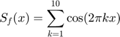
- 5.-Resuelve el problema 1.11-3
- 6.-Construya una app que permita (consultar los ejemplos preconstruidos):
- REFERENCIAS
Objetivos:
- Manipulación básica de MATLAB
- Gráficas de señales reales y complejas continuas
- Transformación de señales continuas (escalamientos y traslaciones)
- Calculo de energía y potencia de señales continuas
1.-Reproducir la seccion 1.11 del libro de Lathi.
1.11-1 Funciones Anonimas
f = @(t) exp(-t).*cos(2*pi*t); t=0; f(t) f(0); t=(-2:2); f(t); % Primer Grafica plot(t,f(t)); xlabel('t'); ylabel('f(t)'); grid on;
ans =
1
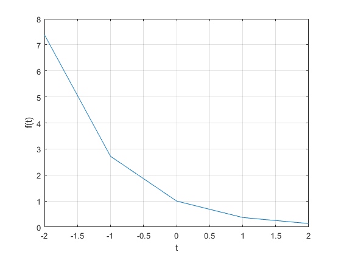 Segunda Grafíca
t=(-2:0.01:2); plot(t,f(t)); xlabel('t'); ylabel('f(t)'); grid on;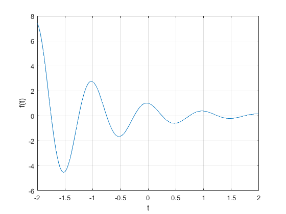
1.11-2 Operadores Relacionales y la Función de paso unitario
Primer Grafíca
u = @(t) 1.0.*(t>=0); t = (-2:2); plot(t,u(t)); xlabel("t"); ylabel("u(t)");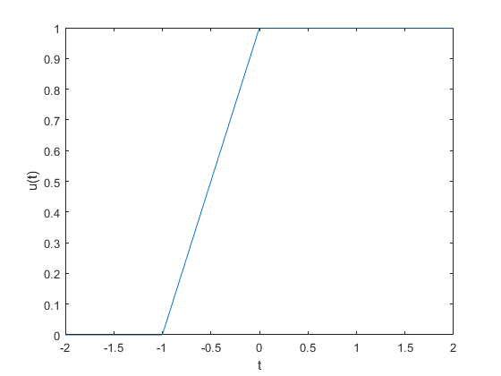
Segunda Grafíca
t = (-2:0.01:2); plot(t,u(t)); xlabel("t"); ylabel("u(t)"); axis([-2 2 -0.1 1.1]);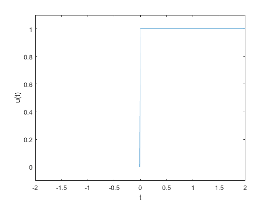
Tercer Grafíca
p=@(t) 1.0*((t>=0)&(t<1)); t=(-1:0.01:2); plot(t,p(t)); xlabel("t"); ylabel("p(t) = u(t)-u(t-1)"); axis([-1 2 -.1 1.1]);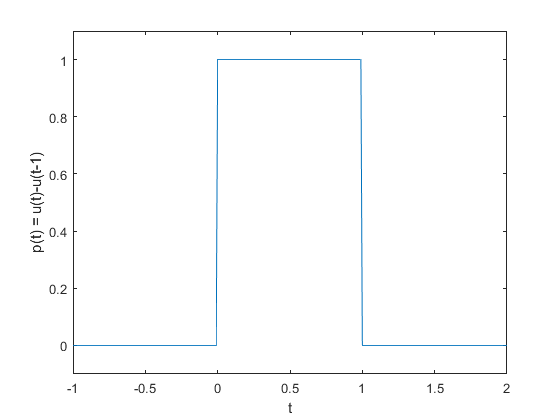
1.11-3 Operaciones de Visualización en la Variable Independiente
Primer Grafíca
g = @(t) f(t).*u(t); t = (-2:0.01:2); plot(t,g(2*t+1)); xlabel("t"); ylabel("g(2t+1)"); grid;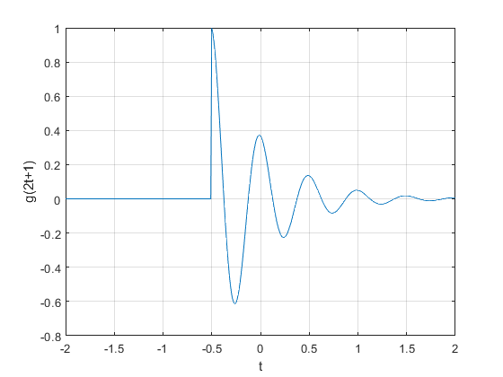
Segunda Grafíca
plot(t,g(-t+1)); xlabel("t"); ylabel("g(-t+1)"); grid;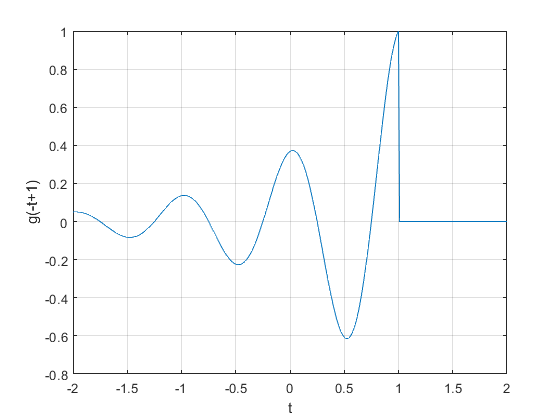
Tercer Grafíca
plot(t,g(2*t+1)+g(-t+1)); xlabel("t"); ylabel("h(t)"); grid;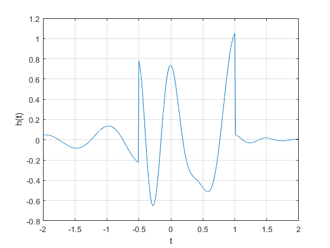
1.11-4 Integral Numérica y Estimación de la Energía de la Señal
x = @(t) exp(-t).*((t>=0)&(t<1)); t = (0:0.01:1); E_x = sum(x(t).*x(t)*0.01) x_squared = @(t) x(t).*x(t); E_x = quad(x_squared,0,1) g_squared = @(t) g(t).*g(t); t = (0:0.001:100); E_g = sum(g_squared(t)*0.001) E_g = quad(g_squared,0,100)
E_x =
0.4367
E_x =
0.4323
E_g =
0.2567
E_g =
0.2562
REPASO 1.21 Calcula la Energía de la Señal con MATLAB Usa MATLAB para confirmar que la energía h(t),definida previamente como h(t)=g(2t+1)+g(-t+1), es Eh=0.3768.
t=(-2:0.01:2); h= @(t) ((t>=-2)&(t<2)); Xcua= @(t) h(t).*h(t); Eh= sum(Xcua(t)*.001)
Eh =
0.4000
2.- RESUELVE EL PROBLEMA 1.2-2 USANDO LAS HERRAMIENTAS DEL PASO ANTERIOR.
1.2-2 PARA LA SEÑAL x(t)en la figura 1.2-2, grafique lo siguiente (a) x(t-4) (b) x(t/1.5) (c) x(-t) (d) x(2t-4) (e) x(2-t) (t<=0).*(-t)+(t>=0).*(t);
f= @(t)((t<=0)&(t>=-4)).*(-t)+((t>0)&(t<=2)).*(t); figure t= -5:0.01:5; plot(t,f(t),'linewidth',2) xlabel('t');ylabel('x(t)'); grid on; ax=gca; ax.XAxisLocation = 'origin'; ax.YAxisLocation = 'origin'; axis([-5 3, -2 5]) ax.Box = 'off'; title('Figura P1.2.2')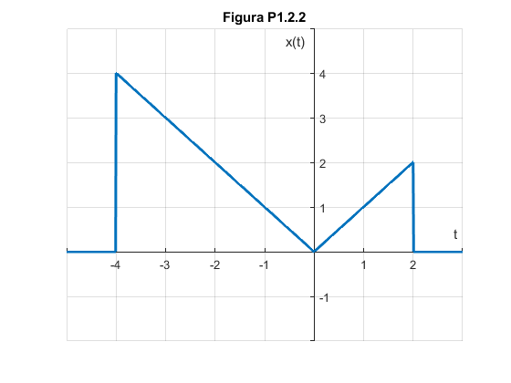
inciso (a)
t= -1:.01:10; plot(t,f(t-4),'linewidth',2) xlabel('t');ylabel('x(t-4)'); grid on; ax=gca; ax.XAxisLocation = 'origin'; ax.YAxisLocation = 'origin'; axis([-1 9, -2 5]) ax.Box = 'off';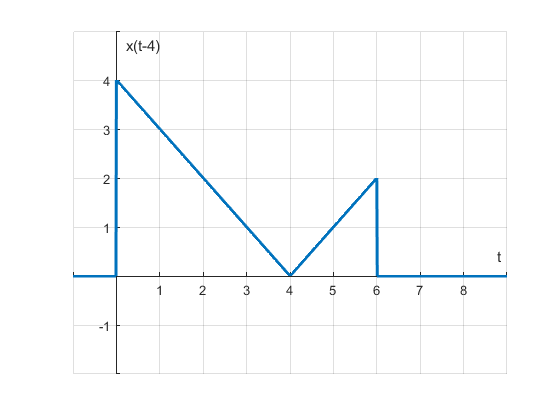
inciso (b)
t= -20:.01:15; plot(t,f(t/1.5),'linewidth',2) xlabel('t');ylabel('x(t/1.5)'); grid on; ax=gca; ax.XAxisLocation = 'origin'; ax.YAxisLocation = 'origin'; axis([-10 6, -2 5]) ax.Box = 'off';

iniso(c)
t= -20:.01:15; plot(t,f(-t),'linewidth',2) xlabel('t');ylabel('x(-t)'); grid on; ax=gca; ax.XAxisLocation = 'origin'; ax.YAxisLocation = 'origin'; axis([-4 6, -2 5]) ax.Box = 'off';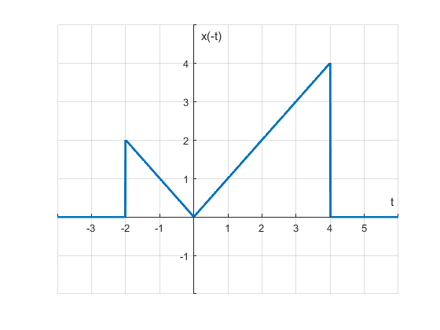
inicso(d)
t= -20:.01:15; plot(t,f(2*t-4),'linewidth',2) xlabel('t');ylabel('x(2t-4)'); grid on; ax=gca; ax.XAxisLocation = 'origin'; ax.YAxisLocation = 'origin'; axis([-4 6, -2 5]) ax.Box = 'off';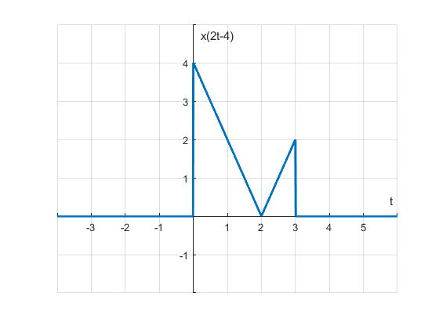
inciso(e)
t= -20:.01:15; plot(t,f(2-t),'linewidth',2) xlabel('t');ylabel('x(2-t)'); grid on; ax=gca; ax.XAxisLocation = 'origin'; ax.YAxisLocation = 'origin'; axis([-1 7, -2 6]) ax.Box = 'off';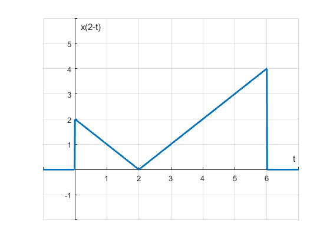
3.-Proporcione el código MATLAB y la salida que traza la parte impar xo (t) de la función x (t) = 2^− t cos (2πt) u (t − π) en un intervalo de longitud adecuada utilizando un número adecuado de puntos.
figure t=(-5:1:5); x=(2*exp(-t).*cos(2.*pi.*t).*((t>=-5)&(t<5))); plot(x,t);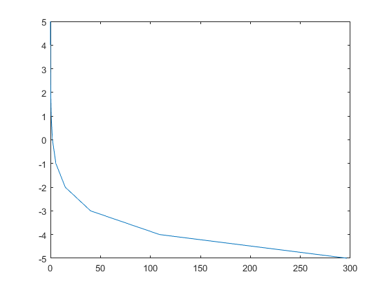
figure xo=(cos(2.*pi.*t).*((t>=-5)&(t<5))/2.*exp(t)); plot(xo,t);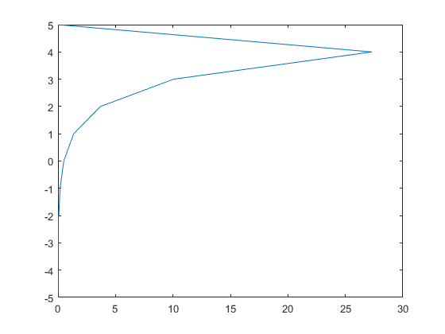
4. CONSTRUYE LA GRÁFICA DE:
t= -20:0.01:20; f=0; for k = 0:10 f = f + cos(2*pi*k*t); end t= -20:0.01:20; figure(1); subplot(2,4,[1,2]) plot(t,f,'Linewidth',2) xlabel('t');ylabel('Sf(t)'); grid on; ax=gca; ax.XAxisLocation = 'origin'; ax.YAxisLocation = 'origin'; axis([-8 8, -3 13]) ax.Box = 'off'; subplot(2,4,[3,4]) plot(t,f,'r' ,'Linewidth',2) xlabel('t');ylabel('Sf(t)'); grid on; ax=gca; ax.XAxisLocation = 'origin'; ax.YAxisLocation = 'origin'; axis([-4.5 4.5, -2.5 7]) ax.Box = 'off'; subplot(2,4,[5,6]) plot(t,f,'g' ,'Linewidth',2) xlabel('t');ylabel('Sf(t)'); grid on; ax=gca; ax.XAxisLocation = 'origin'; ax.YAxisLocation = 'origin'; axis([-1.75 1.75, -1.75 2.5]) ax.Box = 'off'; subplot(2,4,[7,8]) plot(t,f,'c' ,'Linewidth',2) xlabel('t');ylabel('Sf(t)'); grid on; ax=gca; ax.XAxisLocation = 'origin'; ax.YAxisLocation = 'origin'; axis([-0.8 0.8, -.5 .5]) ax.Box = 'off';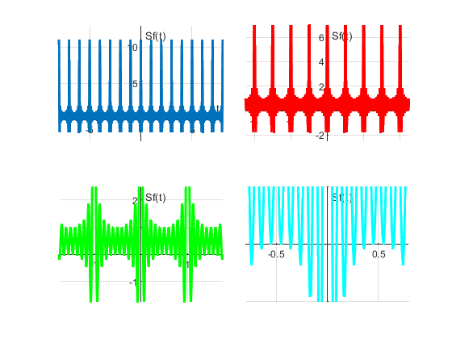
5.-Resuelve el problema 1.11-3
1.11-3 Definir: 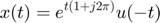$
&
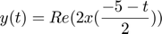
a)Utilice MATLAB para representar Re (x (t)) frente a Im (x (at)) para a = 0.5, 1 y 2 y −10≤t≤ 10. ¿Qué importancia tiene el factor de escala a en la forma de la figura resultante?
Respuesta:Importa en cuestión de que amplifica o dismuye dependiendo el valor de a con respecto al eje t
clear all close all t=[-10:0.01:10]; u=@(t) (t>=0); x= @(t) (exp(t.*(1+j*2*pi)).*u(-t)); y= real(2.*x((-5-t)/(2))); a1=0.5; a2=1; a3=2; figure(1) plot(real(x(t)),imag(x(a1.*t))) figure(2) plot(real(x(t)),imag(x(a2.*t))) figure(3) plot(real(x(t)),imag(x(a3.*t)))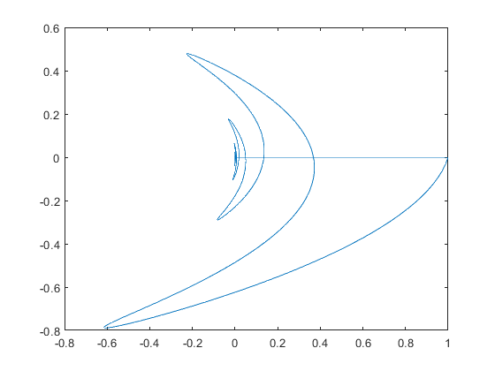 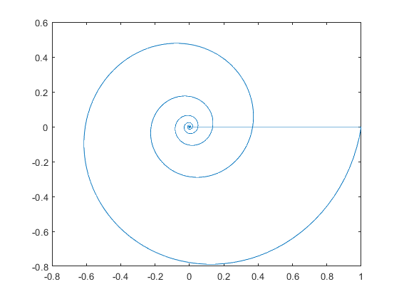 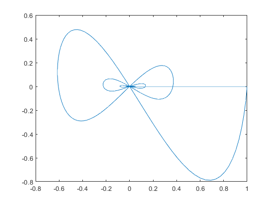
B) Usa MATLAB para grafícar y(t) sobre -10<=t<=10. Analiticamente determine el tiempo t0 donde y(t) tiene una discontinuidad de salto.Verifique su cálculo de t0 utilizando la grafíca de y(t)
clear all close all t=[-10:0.01:10]; u=@(t) 1.0.*(t>=0); x= @(t) (exp(t.*(1+j*2*pi)).*u(-t)); y= real(2.*x((-5-t)/(2))); figure(1) plot(t,y)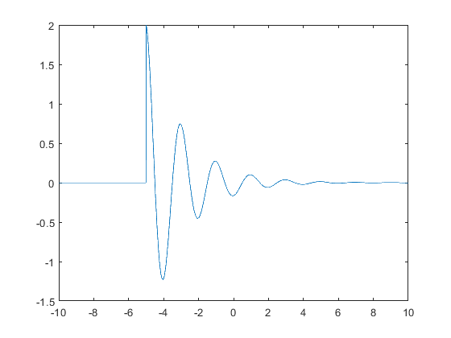
C)Usa MATLAB e integral numerica para calcular la energia Ex de la señal x(t)
clear all close all u=@(t) 1.0.*(t>=0); x= @(t) (exp(t.*(1+j*2*pi)).*u(-t)); t=[-10:0.01:10]; g_squared = @(t) x(t).*x(t); E_x = sum(g_squared(t)*.001)
E_x = 0.0017 - 0.0078i
D)Usa MATLAB e integral numerica para calcular la energia de Ey de la señal y(t)
clear all close all t=[-10:0.01:10]; u=@(t) 1.0.*(t>=0); x= @(t) (exp(t.*(1+j*2*pi)).*u(-t)); y= real(2.*x((-5-t)/(2))); g_squared = @(t) y.*y; E_y=sum(g_squared(t)*0.001)
E_y =
0.2069
E) la gráfica de 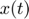 para 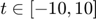
clear all close all t=[-10:0.01:10]; u=@(t) 1.0.*(t>=0); x= @(t) (exp(t.*(1+j*2*pi)).*u(-t)); figure(1) plot(t,x(t))
Warning: Imaginary parts of complex X and/or Y arguments ignored.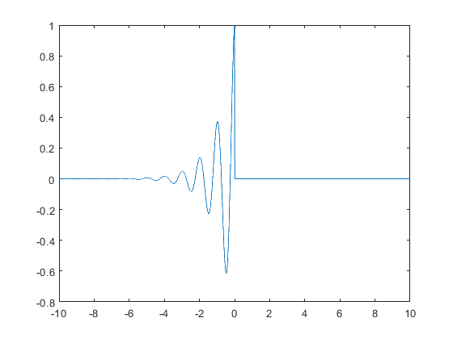
6.-Construya una app que permita (consultar los ejemplos preconstruidos):
Gráficar señales en tiempo continuo reales, el usuario ingresa la definición de la señal en el formato especifico El usuario puede definir el intervalo de la gráfica El usuario puede seleccionar el tipo de transformación (horizontal, vertical o combinación) que desee realizar a la señal, la app deberá mostrar la gráfica de esta transformación. Se adjunta una imagen de la app a la práctica, y el archivo de la app.
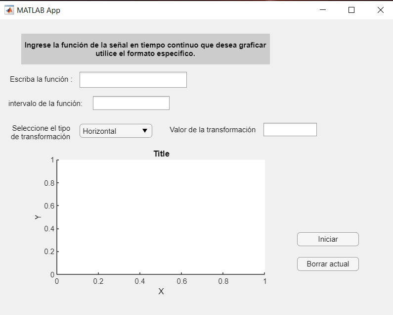
REFERENCIAS
1.-Facultad Autodidacta 5/oct/2020 "35.- Subir proyecto a github fácilmente (versión 2)" Recuraperado de https://youtu.be/RjvyyINfVYY
2.- MATLAB . (2020). Publishing Markup. 24/11/2020, de MATLAB
Sitio web: https://la.mathworks.com/help/matlab/matlab_prog/marking-up-matlab-comments-for-publishing.html
3.-https://www.python-course.eu/matplotlib_subplots.php
4.-https://www.youtube.com/watch?v=dZrShAGqT44 VIDEO DE SERIES DE FOURIER EN MATLAB